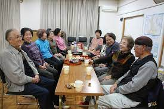
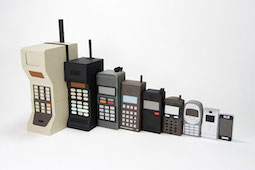
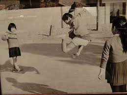
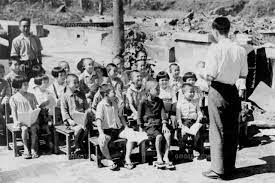

シニア世代に質問してみた
１０の質問
- ローカルコミュニティーに参加しているか
- 今の服装と昔の服装の違い
- 一番古い付き合いの人との出会いはいつか
- 人生で一番感動した出来事
- 港としての横浜
- 横浜は昔から栄えていたのか
- デジタル社会を不便だと感じたことはあるか
- 戦時下の横浜の建物はどんな感じだったのか
- 幼少期の学習環境について
- 戦時中の子供のあそび
記憶装置





デジタルフィールドノート
シニア世代の人を間接してみた日常記録※質問に関係ない内容もあります
- 一週間待ちを観察してみて、スマートフォンを使っているシニア世代の方はいたが、
イヤフォンを使っている方は見つけられなかった - アルバイト中に、機械で注文するシステムを理解できずに質問してくるお客さんの９割が市ヒア世代の方であった
- 会員証を提示する際に同世代から５０代くらいの方はアプリ会員の提示をしてくるが、
６０代から上の方はほとんどカード会員証を提示してくる（バイト）